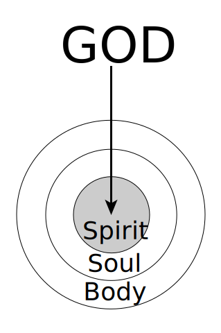

> And God said, Let us make man in Our image, according to Our likeness
Have you ever wondered why you are living in this world and what the purpose of your life is? There are six keys that unlock this mystery.
## 1. God's Plan
God desires to express Himself through man (Rom. 8:29). For this purpose, He created man in His own image (Gen. 1:26). Just as a glove is made in the image of a hand to contain a hand, so also man is made in the
image of God to contain God. By receiving God as his content, man can express God (2 Cor. 4:7).
## 2. Man

To fulfill His plan, God made man as a Body vessel (Rom. 9:21-24). This vessel has three parts: body, soul, and spirit (1 Thes. 5:23). The body con- tacts and receives the things of the physical realm. The soul, the mental faculty, contacts and receives the things of the psychological realm. And the human spirit, the innermost part of man, was made to contact and receive God Himself (John 4:24). Man was created not merely to contain food in his stomach, or to contain knowledge in his mind, but to contain God in his spirit (Eph. 5:18).
## 3. Man's Fall
But before man could receive God as life into his spirit, sin entered into him (Rom. 5:12). Sin deadened his spirit (Eph. 2:1), made him an enemy of God in his mind (Col. 1:21), and transmuted his body into sinful flesh (Gen. 6:3; Rom. 6:12). Thus, sin damaged all three parts of man, alienating him from God. In this condition, man could not receive God.
## 4. Christ's Redemption for God's Dispensing
Nevertheless, man’s fall did not deter God from fulfilling His original plan. In order to accomplish His plan, God first became a man called Jesus Christ (John 1:1, 14). Then Christ died on the cross to redeem man (Eph. 1:7), thus taking away his sin and bringing him back to God (John 1:29; Eph. 2:13). Finally, in resurrection, He became the life-giving Spirit so that He could dispense His unsearchably rich life into man’s spirit (1 Cor. 15:45b; John 20:22; 3:6).
## 5. Man's Regeneration
Since Christ has become the life-giving Spirit, man can now receive God’s life into his spirit. The Bible calls this regeneration (1 Pet. 1:3; John 3:3). To receive this life, man needs to repent to God and believe in the Lord Jesus Christ (Acts 20:21; 16:31).
To be regenerated, simply come to the Lord with an open and honest heart and say to Him:
> _Lord Jesus, I am a sinner._
> _I need You._
> _Thank You for dying for me._
> _Lord Jesus, forgive me._
> _Cleanse me from all my sins._
> _I believe You rose from the dead._
> _I receive You right now as my Savior and life. Come into me! Fill me with Your life!_
> _Lord Jesus, I give myself to You for Your purpose._
## 6. God's Full Salvation
After regeneration, a believer needs to be baptized (Mark 16:16). Then God begins the lifelong process of gradually spreading Himself as life from the believer’s spirit into his soul (Eph. 3:17). This process, called transformation (Rom. 12:2), requires human cooperation (Phil. 2:12). The believer cooperates by allowing
the Lord to spread into his soul until all his desires, thoughts, and decisions become one with those of Christ. Finally, at Christ’s return, God will fully saturate the believer’s body with His life. This is called glorification (Phil. 3:21). Thus, instead of being empty and damaged in each part, this man is filled and saturated with the life of God. This is God’s full salvation! Such a man expresses God and fulfills God’s plan!